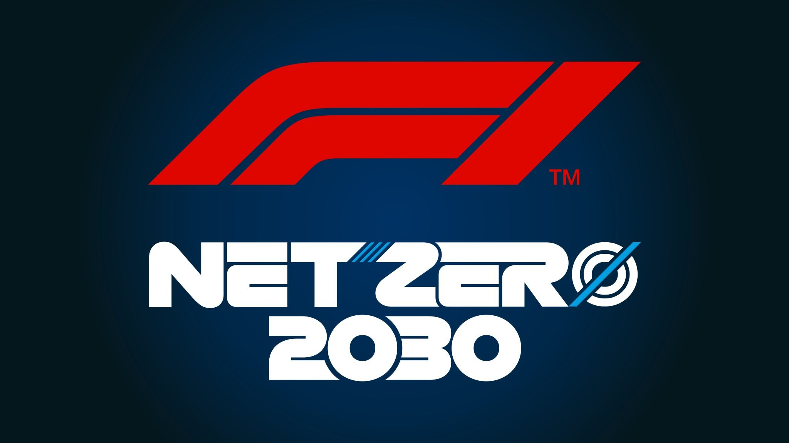

Les émissions de CO₂ de la Formule 1 en 2024 :
Émission de la logistique : Environ 82 673 tonnes de CO₂ équivalent.
Déplacement des personnes : Environ 47 242 tonnes de CO₂ équivalent.
Installation du matériel : Environ 32457 tonnes de CO₂ équivalent.
Émissions des monoplaces lors des courses et essais : Environ 1348 tonnes de CO₂ équivalent.
Total des émissions : 228 793 tonnes de CO₂ équivalent en 2024 !
Par rapport aux autres années : 26% de CO₂ équivalent en moins par rapport à 2018.
Les initiatives environnementales de la F1
Carburants durables : La F1 utilise désormais des carburants contenant 10% d'éthanol et vise 100% de carburants durables d'ici 2026.
Objectif zéro carbone : La Formule 1 s'est engagée à atteindre la neutralité carbone d'ici 2030 pour toutes ses opérations.
Logistique optimisée : Réduction des émissions grâce à une meilleure planification des calendriers et transport maritime.
Unités de puissance hybrides : Les moteurs actuels récupèrent l'énergie cinétique et thermique pour améliorer l'efficacité énergétique.
Recyclage : Programme de recyclage des pneus et des matériaux utilisés lors des Grands Prix.
Énergie renouvelable : Installation de panneaux solaires sur les circuits et utilisation d'électricité verte dans les paddocks.

Découvrez tout le plan de la Formule 1 pour réduire ses émissions en cliquant sur l'image ci-dessus !